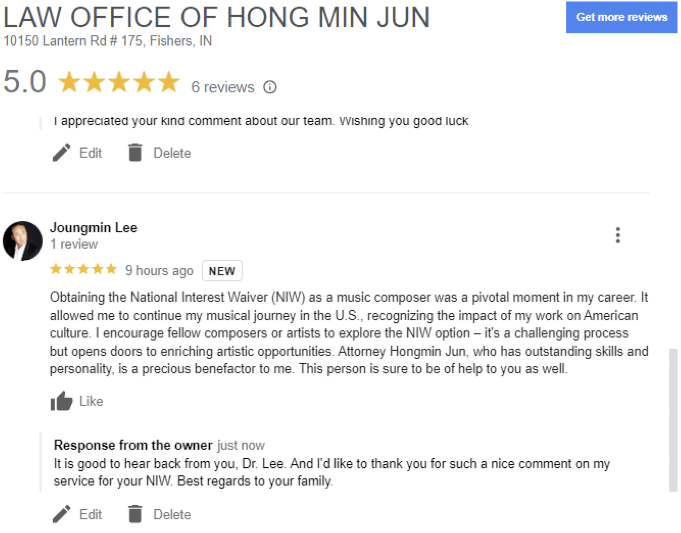

ARTISTS AND NATIONAL INTEREST WAIVER
How differently should Artists' NIW application be prepared for
than other types of NIW cases?
Preparing an Artist's National Interest Waiver (NIW) application
requires a nuanced approach compared to other professions.
Artists often have unique contributions to society, and their
impact on the national interest can be subjective and
multifaceted. Here's how the preparation may differ from other
NIW cases:
Focus on Artistic Achievements
Highlight the artist's significant achievements, such as
exhibitions, awards, critical acclaim, and other recognitions in
the artistic community. Provide a comprehensive portfolio
showcasing the artist's work.
Emphasize Cultural or Social Impact
Artistic work often has a cultural or social impact. Clearly
articulate how the artist's creations contribute to the cultural
or social fabric of the United States. This may involve
explaining how their work reflects or challenges societal norms,
contributes to cultural diversity, or addresses important social
issues.
Unique Contributions to the Field
Artists may make unique contributions that set them apart from
others. Showcase the originality and innovation in the artist's
work, emphasizing how it adds value to the artistic community
and goes beyond what is commonly seen.
Collaborations and Exhibitions
Provide evidence of collaborations with U.S. institutions,
museums, galleries, or other artists. Highlight participation in
exhibitions, both nationally and internationally, and
demonstrate the impact of the artist's work on a broader
audience.
Expert Letters from Artistic Community
Highlight the artist's significant achievements, such as
exhibitions, awards, critical acclaim, and other recognitions in
the artistic community. Provide a comprehensive portfolio
showcasing the artist's work.
Focus on Artistic Achievements
Obtain expert letters from well-known figures in the artistic
community who can attest to the significance of the artist's
work. These letters should discuss the artist's influence on the
field, the importance of their contributions, and their impact
on the community.
Publications and Media Coverage
Include documentation of publications and media coverage
featuring the artist's work. This could be reviews, interviews,
or articles that discuss the artist's impact on the art world.
Educational Contributions
If applicable, emphasize any educational contributions the
artist has made, such as teaching positions, workshops, or
mentorship programs. This can demonstrate a broader impact on
the artistic community.
Letters of Support from Art Institutions
Obtain letters of support from art institutions, galleries, or
curators that have showcased the artist's work. These letters
can attest to the cultural and artistic importance of the
artist's contributions.
Long-Term Impact and Future Plans
Discuss the artist's long-term impact on the U.S. art scene and
any future plans that demonstrate a continued commitment to
contributing to the national interest.
Language in the Petition
Craft the language of the petition to not only emphasize the
artist's exceptional ability but also to convey the unique
nature of artistic contributions to the national interest.
Remember, working with an experienced immigration attorney who
understands the nuances of the artistic field and the NIW
process is crucial for a successful application. The attorney
can help tailor the documentation to effectively convey the
artist's impact on the national interest.

related articles
- What is National Interest Waiver(NIW)?
- National Interest Waiver: Advanced Degree Requirement and Relevant Documentation
- Upgrading a Pending NIW to Premium Processing: A Step-by-Step Guide
- Self Petition
- Recommendation Letters
- Matter of Dhanasar
- List of Documents that are needed for NIW application
- There’s No Disadvantage for Social Science Majors When Applying for NIW!